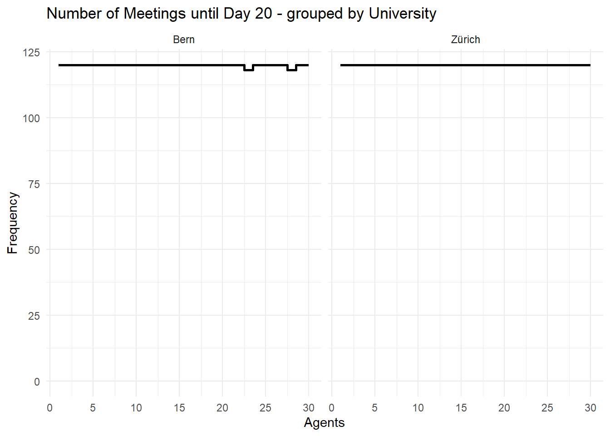

Simulating random meetings (Areas of Knowledge with preferences)
The basic idea is that when two agents meet, they learn together. Later, this should happen in a network. In the beginning, I will let the agents meet randomly in the population to see if the implementation of joint learning works.
If it works as it should, it will be expanded so that a certain percentage of the population meets at the same time.
Now it seems to be time to add other aspects. At first it seems central that different areas of knowledge should be possible.
Up to now, the topic has been defined in terms of knowledge; now it should be a question of preference.
Definitions
Loading some Packages for easier Data management and Presentation of Results
sort_Pop<-function(Pop=Pop,sort_Par=TRUE,clean_Par=FALSE,sort_Agents=NA){if(sort_Par==TRUE){Pop<-Pop%>%select(tidyselect::all_of(sort_Colnames(Pop =Pop, name ="ID")),tidyselect::all_of(sort_Colnames(Pop =Pop, name ="Agents")),tidyselect::all_of(sort_Colnames(Pop =Pop, name ="Learnrate")),tidyselect::all_of(sort_Colnames(Pop =Pop, name ="Knowledge")),tidyselect::all_of(sort_Colnames(Pop =Pop, name ="Counter")),tidyselect::all_of(sort_Colnames(Pop =Pop, name ="Resources")),everything())}if(clean_Par==TRUE){Pop<-Pop%>%select(tidyselect::all_of(sort_Colnames(Pop =Pop, name ="ID")),tidyselect::all_of(sort_Colnames(Pop =Pop, name ="Agents")),tidyselect::all_of(sort_Colnames(Pop =Pop, name ="Learnrate")),tidyselect::all_of(sort_Colnames(Pop =Pop, name ="Knowledge")),tidyselect::all_of(sort_Colnames(Pop =Pop, name ="Counter")))}if(!is.na(sort_Agents)){Pop<-Pop%>%arrange(across(all_of(sort_Agents)))}return(Pop)}
update_Topic<-function(Pop=Pop,sort_Par=TRUE,clean_Par=FALSE,sort_Agents=NA){Typs<-get_Typ(Pop =Pop, name ="Knowledge")Pop_long<-longer_Pop(Pop =Pop, name ="Knowledge")Pop_long<-Pop_long%>%group_by(ID)%>%mutate(tmp_Rank =rank(Knowledge, ties.method ="random"), tmp_Rank =max(tmp_Rank)-tmp_Rank+1, tmp_Rank =0.5^tmp_Rank, ID_Topic =case_when(ID_Preference%in%Typs~ID_Preference,ID_Preference=="All"~Typ[which.min(tmp_Rank)],TRUE~Typ[which.max(Knowledge)]))%>%ungroup()Pop_long<-del_tmp(Pop =Pop_long)Pop<-wider_Pop(Pop_long =Pop_long, name ="Knowledge")Pop<-sort_Pop(Pop =Pop, sort_Par =sort_Par, clean_Par =clean_Par, sort_Agents =sort_Agents)return(Pop)}
Generate grouped Population
Code
gen_Pop<-function(addToPop=NULL,nA=NumberOfAgents,ID_Preference="Max",ID_University=ID_University,K=Knowledge,Typ=SpezKnowledge,pWD=percentsWorkingaDay,pMD=percentsMeetingsaDay){ID<-seq_len(nA)Pop<-tibble(ID =ID, ID_Preference =ID_Preference, ID_University =ID_University)Pop<-update_Typ(Pop =Pop, name ="Agents", Typ =list("p_WorkDay", "p_MeetDay"), add =list(pWD, pMD), set =TRUE)Pop<-update_Typ(Pop =Pop, name ="Knowledge", Typ =Typ, add =K, set =TRUE)if(!is.null(addToPop)){Pop<-Pop%>%mutate(ID =ID+max(addToPop$ID))Typ_add<-get_Typ(Pop =addToPop, name ="Knowledge")Pop<-update_Typ(Pop =Pop, name ="Knowledge", Typ =Typ_add, add =0)addToPop<-update_Typ(Pop =addToPop, name ="Knowledge", Typ =Typ, add =0)Pop<-bind_rows(addToPop,Pop)}Pop<-update_Learnrate(Pop =Pop)Pop<-update_Topic(Pop =Pop)Pop<-sort_Pop(Pop =Pop)return(Pop)}
Code
Pop<-gen_Pop( nA =3, ID_Preference ="Max", ID_University ="Zürich", K =list(0.01, 0.2), Typ =list("M1", "M2"), pWD =0.5, pMD =0.8)Pop<-gen_Pop( addToPop =Pop, nA =2, ID_Preference ="All", ID_University ="Bern", K =list(0.01, 0.2), Typ =list("M3", "M2"), pWD =0.2, pMD =0.5)Pop<-gen_Pop( addToPop =Pop, nA =1, ID_Preference ="M3", ID_University ="Bern", K =list(0.8), Typ =list("M1"), pWD =0.2, pMD =0.5)Pop<-gen_Pop( addToPop =Pop, nA =1, ID_Preference ="M1", ID_University ="Bern", K =list(0.3, 0.3, 0.3), Typ =list("M1", "M2", "M3"), pWD =0.2, pMD =0.5)Pop<-gen_Pop( addToPop =Pop, nA =1, ID_University ="Bern", K =list(0.0, 0.0, 0.0), Typ =list("M1", "M2", "M3"), pWD =0.2, pMD =0.5)Pop
# A tibble: 8 × 13
ID ID_Preference ID_Topic ID_University Agents_Knowledge_Max
<int> <chr> <chr> <chr> <dbl>
1 1 Max M2 Zürich 0.2
2 2 Max M2 Zürich 0.2
3 3 Max M2 Zürich 0.2
4 4 All M1 Bern 0.2
5 5 All M1 Bern 0.2
6 6 M3 M3 Bern 0.8
7 7 M1 M1 Bern 0.3
8 8 Max M1 Bern 0
# ℹ 8 more variables: Agents_Knowledge_Profile <dbl>, Agents_p_MeetDay <dbl>,
# Agents_p_WorkDay <dbl>, Learnrate_Others <dbl>, Learnrate_Topic <dbl>,
# Knowledge_M1 <dbl>, Knowledge_M2 <dbl>, Knowledge_M3 <dbl>
Simulation parameter
reset_Counter
Code
reset_Counter<-function(Pop=Pop){Pop<-update_Typ(Pop =Pop, name ="Counter", Typ =list("Day", "Time_total","Time_meet","Time_learnd","Number_meet"), add =0, set =TRUE)return(Pop)}
update_Resources
Code
update_Resources<-function(Pop=Pop,time_day=hoursDay,set=TRUE){tmp_Time<-time_day*Pop[["Agents_p_WorkDay"]]tmp_p<-Pop[["Agents_p_MeetDay"]]Pop<-update_Typ(Pop =Pop, name ="Resources", Typ =list("Time_total","Time_meet","Time_learnd"), add =list(tmp_Time,tmp_Time*tmp_p,tmp_Time*(1-tmp_p)), set =set)return(Pop)}
sel_Pairs_rnd<-function(Pop=Pop,psize=percentsOfPop){psize<-min(psize, 1)nR<-nrow(Pop)n<-round(nR*psize*0.4999, 0)n<-max(n, 1)SubPop<-sel_SubPop( Pop =Pop, n =n)Slot1<-SubPop$sel%>%mutate(tmp_ID =seq_len(n))if(nrow(SubPop$rest)==n){Slot2<-SubPop$rest}else{SubPop<-sel_SubPop( Pop =SubPop$rest, n =n)Slot2<-SubPop$sel}Slot2<-Slot2%>%mutate(tmp_ID =seq_len(n))Pairs<-bind_rows(Slot1, Slot2)return(Pairs)}
Timeline<-get_Timeline(TL =Timeline, Pop =Pop)Pop1<-update_Pop(Pop =Pop, name ="Counter_Day", add =1)Timeline<-get_Timeline(TL =Timeline, Pop =Pop1)Timeline
# A tibble: 16 × 18
ID ID_Preference ID_Topic ID_University Agents_Knowledge_Max
<int> <chr> <chr> <chr> <dbl>
1 1 Max M2 Zürich 0.0345
2 2 Max M1 Zürich 0.0428
3 3 Max M2 Zürich 0.260
4 4 All M3 Bern 0.2
5 5 All M3 Bern 0.200
6 6 M3 M3 Bern 0.8
7 7 M1 M1 Bern 0.394
8 8 Max M3 Bern 0.0200
9 1 Max M2 Zürich 0.0345
10 2 Max M1 Zürich 0.0428
11 3 Max M2 Zürich 0.260
12 4 All M3 Bern 0.2
13 5 All M3 Bern 0.200
14 6 M3 M3 Bern 0.8
15 7 M1 M1 Bern 0.394
16 8 Max M3 Bern 0.0200
# ℹ 13 more variables: Agents_Knowledge_Profile <dbl>, Agents_p_MeetDay <dbl>,
# Agents_p_WorkDay <dbl>, Learnrate_Others <dbl>, Learnrate_Topic <dbl>,
# Knowledge_M1 <dbl>, Knowledge_M2 <dbl>, Knowledge_M3 <dbl>,
# Counter_Day <dbl>, Counter_Number_meet <dbl>, Counter_Time_learnd <dbl>,
# Counter_Time_meet <dbl>, Counter_Time_total <dbl>
A learning process with updated learn rate by current knowledge when Agents meet randomly by Days
Code
sim_Days<-function(Pop=Pop,nD=nubmberDay,time_day=8,time_meet=0.75){Pop<-update_Learnrate(Pop =Pop)Pop<-update_Topic(Pop =Pop)Pop<-reset_Counter( Pop =Pop)Pop<-update_Resources( Pop =Pop, time_day =time_day)TL<-get_Timeline(TL =TL, Pop =Pop)for(iin1:nD){Pop<-learn_Day(Pop =Pop, time_day =time_day, time_meet =time_meet)Pop<-update_Typ(Pop =Pop, name ="Counter", Typ =list("Day"), add =list(i), set =TRUE)TL<-get_Timeline(TL =TL, Pop =Pop)}Output<-list( Pop =Pop, TL =TL)return(Output)}
Definition & Calculation
Code
Pop<-gen_Pop( nA =30, ID_Preference ="M1", ID_University ="Zürich", K =list(0.01), Typ =list("M1"), pWD =0.8, pMD =0.8)Pop<-gen_Pop( addToPop =Pop, nA =30, ID_Preference ="All", ID_University ="Bern", K =list(0.01), Typ =list("M2"), pWD =0.8, pMD =0.8)Pop
plt_Number_meet(TL =res$TL, TP =0, Group ="ID_University")
Code
plt_Number_meet(TL =res$TL, TP =20, Group ="ID_University")

Code
plt_Time_invest(TL =res$TL, TP =20, Group ="ID_University")
Code
plt_Learnrate_Time(TL =res$TL, TP =20, Group ="ID_University")
Code
plt_Knowledge_Time(TL =res$TL, TP =20, Group ="ID_University")
Special Cases
Only one Agent with Knowledge (0.8)
Code
Pop<-gen_Pop( nA =10, ID_Preference ="M1", ID_University ="Zürich", K =list(0.01), Typ =list("M1"), pWD =0.8, pMD =0.8)Pop<-gen_Pop( addToPop =Pop, nA =10, ID_Preference ="All", ID_University ="Zürich", K =list(0.01), Typ =list("M1"), pWD =0.8, pMD =0.8)Pop<-gen_Pop( addToPop =Pop, nA =9, ID_University ="Zürich", K =list(0.01), Typ =list("M1"), pWD =0.8, pMD =0.8)Pop<-gen_Pop( addToPop =Pop, nA =1, ID_University ="Zürich", K =list(0.8), Typ =list("M1"), pWD =0.8, pMD =0.8)Pop<-gen_Pop( addToPop =Pop, nA =10, ID_Preference ="M2", ID_University ="Bern", K =list(0.01), Typ =list("M2"), pWD =0.8, pMD =0.8)Pop<-gen_Pop( addToPop =Pop, nA =10, ID_Preference ="All", ID_University ="Bern", K =list(0.01), Typ =list("M2"), pWD =0.8, pMD =0.8)Pop<-gen_Pop( addToPop =Pop, nA =9, ID_University ="Bern", K =list(0.01), Typ =list("M2"), pWD =0.8, pMD =0.8)Pop<-gen_Pop( addToPop =Pop, nA =1, ID_University ="Bern", K =list(0.4), Typ =list("M2"), pWD =0.8, pMD =0.8)Pop